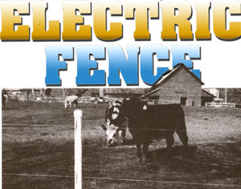
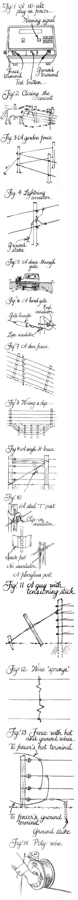

Every country dweller occasionally has a need to keep some creatures in bounds and to keep others out. But all fences are not created equal. Wooden ones demand a lot of labor and maintenance. Barbed wire fences can injure animals (or installers). And welded wire enclosures are both expensive and unwieldy. The cheapest, easiest to put up, and most flexible animal containment there is replaces the pure force of a physical barrier with applied human intelligence and technology. I'm talking about electric fencing.
An electric fence consists of one or more strands of bare steel wire charged to deliver a convincing (but short-lived) electric shock when touched. You can rig anything from a one-strand rabbit barrier around the carrot patch to a "Down Under" multistrand, high-tension fence that carries enough voltage to keep a whole county of winter-hungry deer from your young fruit orchard. I'll tell you how to design, install, and maintain the electric fencing that's best for your place . . . or your places. That's another advantage of electric fencing: Country people do move from time to time, and electric fence is the only form of barrier that is readily transportable.
The heart of an electric fence is the charger, or fencer (Fig. 1), which combines an electrical transformer with a timing mechanism to develop those short, sharp shocks. The current can come from a 6- or 12-volt DC battery, a small photovoltaic system, or from (greatly modified) 110-volt AC household current. The most persuasive chargers are the low-impedance "Energizers" used to electrify sheep fence by the hundred-mile leg in the Australian outback. These turn 110-volt AC power into pulses of 3,000 volts at 30 amps-almost a hundred thousand watts of power and enough to turn a whole herd of sheep into shish kebab were each pulse not limited to a few ten-thousandths of a second. The typical domestic line-powered charger develops only about 4,000 volts at half an amp. This two thousand watts is also a potentially dangerous charge, but each pulse (they come on 50 to 60 times a minute) lasts less than a thousandth of a second. Battery-powered fencers have less oomph behind them, so they release longer pulses-lasting about a half-second each-at a fraction of an AC unit's voltage.
The jolt from a typical fencer feels like you've been hit by a rapid-fire electric peashooter: brrrrrrrrrrrrrrrrrt. You feel it and pull back right quick, but there is no burn or lasting pain-just a strong and unpleasant memory. And since the current pulses for only a fraction of a second, there is little danger of getting "frozen" to the wire. I am told that a fencer shock can interfere with cardiac pacemakers and such; if she's so wired, forewarn Greataunt Emmie to unplug the fencer anytime she goes out to bust broncs in the back pasture.
You absolutely must use a UL- (or similarly) approved fencer to charge your fence. Such a device is effective and safe-it will blow a fuse instantly during any serious malfunction. Don't do as some neophyte homesteaders have done and wire an electric fence directly to a wall socket, welding transformer, model railroad speed controller, or any home-brewed device.
You'll recall from junior-high science that electricity is the flow of free electrons from the + to the - terminal of a power source through a conductor such as metal (or a water-based living thing). The steel fence wire is good conducting material that's held away from any other conductors such as wood or metal fence posts by nonconductive ceramic or plastic insulators. The hot, +, post of the charger is connected to the fence. The other, -, post is wired to a stake driven into the soil. Normally then, each time the charger pulses with voltage, trying to send a charge of electrons through the wire, nothing much happens. There is no connection between the hot + post and the - return one, so there is no flow of current-no amperage. The circuit is open. Only when your curious saddle pony brushes the wire with his velvety muzzle does the circuit close (Fig. 2). Then a brief shot of current flows at lightning speed from the + post of the fencer . . . to the wire . . . through the pony's nose, body, and hooves . . . back through the soil . . . and to the - post of the charger. ZAP! The shock is delivered, causing the pony to pull away and reopen the circuit.
To keep small pests out of your vegetable patch, you'll want to set up a small garden fence . . . and the main component of that will be an economical charger. The least expensive garden fencers cost around $25 (all prices in this article are approximations) and run a low-power, continuous charge. These are not as powerful or as safe as those employing pulsed current, so I generally don't recommend them. A typical, plug-in, pulsed charger goes for $45 and uses an average of around seven kilowatt-hours (about 60 cents worth) of electricity per month. Small 6-volt, battery-powered fencers cost the same as plug-in ones-if you don't count the required $18 battery (which should last a growing season).
Buy a bag of two dozen little slotted plastic insulators for a dollar and change . . . nail them to yard-long tomato stakes . . . hammer the stakes six inches deep . . . string 19-gauge steel wire (a 500-foot roll costs under $10) on the insulators and charger . . . and you'll have a perfectly satisfactory one- to three-strand garden fence. Remember to run the wire on the outside of the posts (to keep predators from knocking the posts over). And prevent sag in your fence by guying each corner post: Attach a length of wire by its midpoint to the post top and run it to a pair of ground stakes hammered in at a mirror image of the angle made by the fence corner (Fig. 3).
You can use more elaborate stakes, of course. Lightweight fiberglass T posts, for instance, are nonconductive-so they require no insulators-and come with clips to hold the wire (Fig. 10). They push right into the soil, pull out as easily, and cost a dollar or two per stake (great stuff, fiberglass).
Garden fencers aren't waterproof or particularly sturdy, so they must be kept under cover. Install yours in a dry spot in the shed or the house. You can build a weathertight box out at the garden for a battery-powered model. In any case, make sure the charger is readily visible so you can see the red blinking indicator that tells you it is operating. Most models also have a test button or a separate white blinker that indicates whether the fence circuit is open or grounded.
If your charger is a bit away from your fence, you can run a length of common insulated lamp cord between the two. Hook one of the cord's two wires up to the fence and the hot pole of the charger (turned OFF, of course!), and the other to the fencer's ground post and a bare metal stake. Drive this stake in as close to the fence and as deep into the ground as you can. In dry areas, that stake needs to go eight feet down.
Always put a lightning arrestor ($4.00) between the fencer and fence-especially if the charger is inside a building (Fig. 4). It's nothing but a fuse having its own ground line that you connect to its own well-sunk steel post. (Don't just punch the little metal probe at the end of that ground line into the sod.) If the megavolts of a lightning bolt strike the fence, they'll melt the arrestor's fuse and go to ground instead of frying the fencer . . . and possibly your house or barn with it. I'd install a separate lightning protector even if the fencer has a built-in one; it's easier to replace.
How many strands should you run? A single wire set about 5" above the ground should shock the muzzles, ears, or underbellies of marauding rabbits, groundhogs, and raccoons. (I've seen a wise old 'chuck hunker down under a wire set the usually recommended 6" high.) Better yet is a two-strander with the lines run 4" and 10" high. A third wire up another 6" completes a really effective backyard garden fence. You can step over it, but most pests won't think to.
The three-strand garden fence will deter dogs if they're not running hard . . . chickens and ducks if you add wire springs or thin batten stakes every five feet or so to keep those birds from charging through . . . and got-loose pigs and sheep (at least for a while). It won't restrain grown goats or large stock that can step right over (or, worse, get the wire snarled. about their hocks).
The fence will require periodic maintenance. You'll have to trim grass under the wire or it will lose its zap after every heavy dew. (And once an animal has gotten through a grounded electric fence, it may ignore the shock when the juice is on.) I unplug mine (naturally), pull the stakes, move the whole fence a couple of feet to one side, mow, and then put the fence back. You'll also have to keep alert to other grounding mishaps. For instance, a branch may blow onto the wire or a wet leaf onto an insulator. If the fence light indicates a grounded condition, I make a quick inspection tour, often using a fence tester-a small continuity tester that lights up when the fence is delivering full power.
A pasture fence, or one used for keeping out larger predators (such as wild dogs or deer), will need to be a good bit stouter than the simple garden fence described above. It should be tensioned tight enough to stay off the ground and to maintain enough resistive pressure so that an animal will take it seriously if the charger goes out for a while. You'll need strong support posts at the ends and corners, and at the tops and bottoms of any hills or culverts. That way, runs of wire can be strung tight, needing little between the main supports but battens or lightweight line posts to keep the wires separated and off the ground.
Before setting the fence, plan and clear the intended fence line so animals can see the wire and so no weed plants will short it out. If the fence crosses a well-traveled drive or private road, you can order a $100 spring-hinged drive-through gate (Fig. 5) from a mailorder house. These dandy gadgets have charged wire dangling off horizontal members to keep any animal in check, though your vehicle can pass through at will. If you just need to drive through the gate occasionally or need a walk-through opening, you can use inexpensive ($1.50 each) spring-tensioned plastic gate handles; just cut the wire near a post and hook them on (Fig. 6). Be sure to train everyone who uses the gate to refasten the handles: If a line's left unhooked on the ground, electricity will drain out of it with each pulse.
The larger the stock, the heavier gauge wire you'll need . . . the taller the animals, the more strands . . . and the wilder the animals are, the stronger the posts. In choosing the wire layout, put the wires where they will make best contact on the beasts to be restrained. If you're running a single wire, string it at chest level so the target animal will be shocked going over or under. The top strand of a two-wire fence should hit at upper mid-breast (a horse or cow's lowered nose), the other midway down to the ground, so long as the interwire space doesn't permit a careful step through. With three or more wires, you'll normally run the top wire at upper mid-breast level and the others equally spaced below it.
A single or double 15- or 17-gauge wire fence should do for domesticated steers, milk cows, sheep, young goats, and feeder pigs-if they have plenty of food, water, and shade, and if they won't get into too much trouble if they do get out. But don't try to restrain your animals' stronger urges with such a lightweight fence. If the pasture's definitely greener next door, you're going to need at least three strands of 14-gauge wire on sturdy posts.
If you're building an antipredator fence, consider the invaders' habits. Deer can jump high, slink low, and sneak through gaps. Still, a six-strand fence with the wires 10" apart and the bottom one no more than 8" off the round will keep most of them out (Fig. 7).
The same basic layout will also keep most coyotes, dogs, or wolves honest. Those varmints, though, are great at slinking under wires, so run the bottom wire 6" off the ground. They'll even seek out dips in the ground where it's easier to squeeze under. A series of stakes hammered into a dip, strung with an extra wire, will close a big dip (Fig. 8); a loose wire dangling of a hot line will block off a small one. However, if you have serious predator problems or range stock needing strong restraints, consider high-tensile fencing (information can be obtained from the companies listed at the right).
You can make a temporary, single-strand pasture fence with five-foot sticks sunk 18" into the pasture soil, though you'll want to use stouter wood or steel pots for ends and corners. Using a double-headed (easily extracted) nail, hammer an insulator onto each post before you set it. Chip a point on one stick end with your hand ax. Then, one day when the ground is wet and easily penetrated, open holes in the soil-a four-foot prybar works well for this-stick the posts in, and sledge hammer them down so they'll stay put.
A more permanent fence with multiple wires should use stout wood or steel corner and end posts, sturdy line posts every 20 to 50 feet, and battens where needed in between. Six-inch pressure-treated or creosoted wood fence posts made of cypress, red cedar, locust. or other rotresistant wood work fine. You'll need to dig their holes with a posthole diger and tamp the posts firmly in place. The corners and ends will need H or diagonal bracing (Fig. 9). [EDITOR'S NOTE: For more information on setting up wooden-post fence lines, gee "Putting Up a Barbed Wire Fence" in MOTHER N0. 86.]
Steel and fiberglass posts (Fig. 10) are easier to set than wood ones-they just pound in. You can secure their ends and corners with diagonal braces inside or outside guy-wire rigs with tensioning sticks (Fig. 11). And there's a wide array of steel posts available. Forged U-shaped posts with holes or hooks down their length are strong and adaptable (and cost up to $5.00 each). You can install insulators on them quickly with long bolts and wing nuts. The type of U post with a broadened lance foot stays put the best of all the steel posts.
Forged T posts are about equal in cost and fence-holding strength to the U's. They use a special clip for mounting insulators that makes for easy height adjustment. Some T's come with spade-shaped anchor plates attached near the bottom to help secure the posts in the ground.
Self-insulating, heavy-duty fiberglass posts cost about the same as the two steel posts above, are notched so wire can be clipped right on, don't corrode, and make great line posts. They're not strong enough, though, for ends or corners.
L-shaped sheet-steel posts come next in strength and cost, followed by various types of rodtype steel posts. You can mix and match post types as your needs and pocketbook dictate. Our own horse fence is a two-strand affair with double-guyed U posts at the ends and corners and at 50-foot intervals . . . and little 3/8", $1.00 spade-foot steel rod battens about every 15 feet along the length.
When you're putting your posts in, keep the line as straight as possible to make the tightening job easy. And orient posts so the insulators on a stock-containment fence point in, while those on a predator-control fence point out. You can drive steel posts in most soils with nothing but a hand sledge and a good arm, but if you have a great many to install, you may want to invest in a steel-tube, spring-loaded post driver ($80). A good investment if you ever plan to remove a steel-post fence is an all-purpose rachet-type farm jack and post remover ($60).
And Fencers if your fence is in easy range of the house or a wired outbuilding, choose a plug in charger. The up-front cost, energy expense, and upkeep are all low. (Remem ber, though, it must be kept under weathertight cover.) A 110-volt AC charger rated to charge 15 miles of fence will cost around $45; a 25-mile unit, $75. Those ratings are optimistic-to. put it kindly-based on a single-strand, weed-free fence. Get the most powerful fencer you can justify; it won't develop significantly greater deter rent, but it will push it out over greater distance and through more undergrowth. And con sider getting a fencer with all solid-state circuits. It's a bit more costly, but has no parts to wear out except for the indicator lamp and the on-off switch.
For remote locations, you'll want a battery-powered fencer. The chargers cost about the same as equivalent line-powered models, but you'll have the added expense of batteries. Fifteenmile-rated units use an $18, 6-volt battery. A more enduring 12-volt unit operates off $20-and-up dry cells or off a rechargeable deep-cycle battery that will set you back considerably more but will last for years. (You'll have to haul the battery home and give it a slow recharging every month or so-with a $25 to $50 battery charger.)
The most up-to-date fencers are solar-powered and have solid-state components along with built-in gel-cell batteries that never need water. They come in 6- or 12-volt models for a steep $150 to $250. The 6-volt chargers have 16 PV cells; the 12-volt ones, 36 to 40. Starting with a fully charged battery, they should keep your fencer operating virtually forever.
The battery will run down over three weeks of solid overcast weather, but perk up in only one day of full sun. Hooking Up the Wire
0nce the posts are hammered in and the fencer's ready to go, stringing the fence itself is a cinch. Attach a length of wire by a ceramic, doughnut-shaped end insulator at a braced corner or gate opening . . . and reel the line out, fixing it to your insulators as you go. Don't let loops kink up in the outgoing wire, but revolve the reel as needed to keep the run smooth. And maintain just enough tension to make a taut fence. You can cut and splice wire easily whenever needed. To keep the wires separated and off the ground, set battens every 10 or 15 feet or put in "springs"segments of wire crimped in a Z fashion between runs of wire (Fig. 12). If no trees or shrubs mark the course of the fence, help livestock see it by tying "flags" every few feet along the top wire. Strips of nonconductive fluorescent plastic tape work best. Tape them on or tie them tight so they don't get blown to downwind stakes.
To join fencer to fence, hook the charger's positive lead through the lightning arrestor and to the fence. Attach the negative post of the fencer and the lightning arrestor ground to a deeply buried steel ground rod as near to the fence as possible. In a multiple wire fence, you will need to connect the fence strands together with securely wrapped wire before they go to the fencer and ground stake lines, so all wires will be uniformly charged. If you live in an especially dry area-where the soil may not have enough moisture to conduct currentyou can run alternate charged and ground wires: Hook the hot wires up to the fencer's positive lead, and the return wires up to the negative lead (Fig. 13). Animals will get shocked when their bodies connect the two wires.
You should be sure to train your stock to electric fencing before you set them loose in the pasture. Scatter a little feed under and just outside a charged wire-perhaps one you've rigged up on doughnut-shaped corner insulators in one end of a large pen (one which allows them enough room to bolt when they get shocked). As they reach farther and farther for the feed, they'll get zapped on the snout. Keep that training up until the animals consistently avoid the wire. But never leave the training wire uncharged or the animals will realize it can be harmless.
A great new innovation is poly wire-fence line made from several strands of brightly colored plastic filament that's interwoven with thin, stainless steel wire. It conducts like crazy but is as flexible as twine. It isn't wildly overpriced at $50 for about a fourth of a mile of wire and a reel to store it on. Poly isn't intended as a permanent fence, but it can be strung out to make quick one-strand containments for mild-mannered stock (Fig. 14). I run the wire on temporary posts and tie one end (with a bow knot!) onto the nearest length of hot pasture-fence wire.
Another great use for poly wire is dividing your pasture into segments for controlled grazing. Such "strip grazing" has become a science in the sheep country of New Zealand and Australia. By rotating pasture segments between intensive graze and fallow time (and by eliminating shade and water so livestock have to eat grass to get fluid), farmers improve-some say doublepasture productivity. The critters harvest everything edible, instead of just the choicest fronds. Once the graze is down far enough to encourage new growth, but before the animals have pulled the plants out by the roots, the stock are moved to a strip of fresh browse. Long, narrow strips requiring movement of only two poly wire strands and a few battens make for the simplest strip system.
Poly wire is also the best fencing tool for breaking a wild meadow into manageable plots so you and your animals can work it into proper pasture a bit at a time. After each section has been grazed, you can go in with a scythe or lawn mower and cut down the unpalatable goldenrod, ferns, and woody plants that haven't been grazed down. Then you can fertilize, lime, and reseed as necessary.
To go electric in your fencing. Its only comparative disadvantage is the need for maintenance. You must service the charger as necessary, keep the fence line clean and ungrounded, and overhaul the wire and insulators from time to time. Still, building a "hot" fence is the only way to put up a heavy-duty barrier quickly and for pennies-rather than dollars-a foot.
And, oh yes, hang little yellow-painted ELECTRIC FENCE signs anyplace neighbors and wanderers might come through your fences. No point giving anyone a charge when you don't mean to.
EDITOR'S NOTE: New England homesteader John Vivian has written a number of books on selfreliant living . . . including The Manual of Practical Homesteading, Building Stone Walls, and Keeping Bees, as well as MOTHER's handbooks "Building with Native Stone" (issue 85) and "Raising Free-Range Chickens" (issue 88).
SOURCES OF GOOD FENCING SUPPLIES
(Note: All the companies listed offer free catalogs.)
Springtight Power Fence
Brookside Industries, Inc. Tunbridge, VT 05007 802/8893737
Also offers a full range of free informational pamphlets and support services concerning predation control and rotational grazing.
West Virginia Fence Corp.
U.S. Rt. 219 Lindside, WV 24951 304/753-4387
Also offers free pamphlets on deer fencing and rotational grazing.
Techfence
P.O. Box A Marlboro, NJ 07746
Offers a $4.00 installation manual.
Central Tractor Farm & Family Center
1515 E. Euclid Des Moines, IA 50316 800/247-7508
C.H. Dana Company, Inc.
Hyde Park, VT 05655 802/888-2912
Farnam Farm Equipment Catalog
P.O. Box 12068 Omaha, NE 68112 402/453-9100
Modern Farm
1825 Big Horn Ave. Cod y, WY 82414 30787-5946
|
 |
 |
|